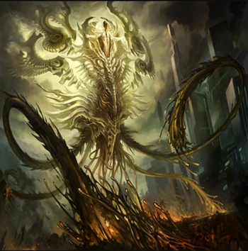
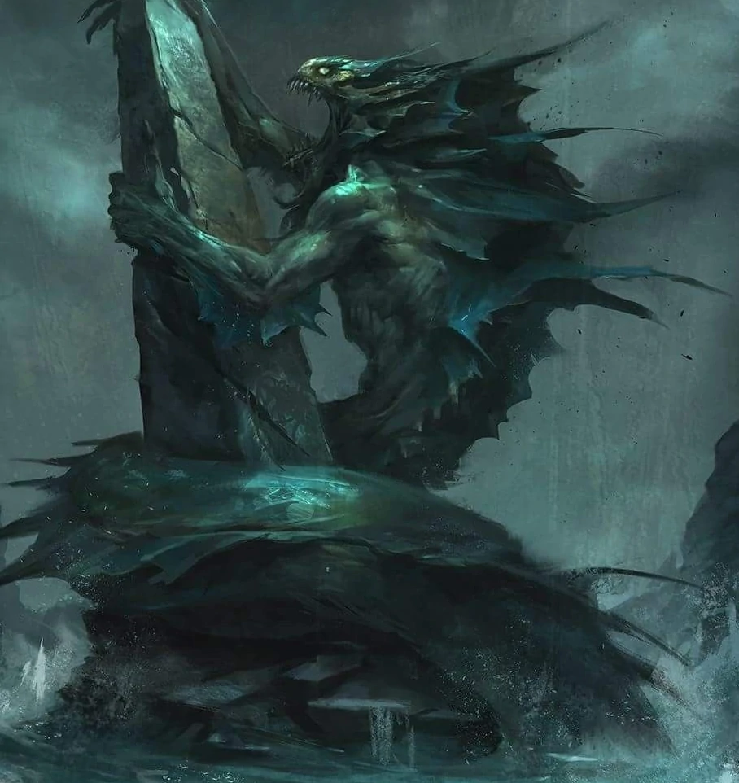
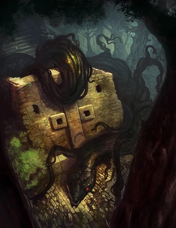

Hastur

A verdadeira forma de Hastur nunca será revelada, mas há duas formas principais em que ele
é constantemente imaginado. A primeira delas é uma bolha disforme de tentáculos como os de
polvos. A segunda é um humanóide escondido por um manto dourado e
rasgado com um conjunto de tentáculos de cor semelhante escorrendo debaixo dele.
Dagon

Dagon aparece como peça-chave nos contos ambientados na ficticia cidade de Innsmouth. Como
é descrito no conto A Sombra sobre Innsmouth, Obed Marsh, capitão da principal embarcação
pesqueira de Innsmouth, após retornar de uma viagem pelo Oceano Pacífico, destituiu a Igreja
Católica da cidade, clamando que havia conhecido divindades poderosíssimas, que poderiam
suprir seu povo com ouro e gemas preciosas, além de garantir fartura em sua principal
atividade: a pesca. Em troca, sacrifícios humanos eram oferecidos de tempos em tempos aos
"Profundos", em nome de Dagon e Hydra, seus progenitores
Yig

Yig, o Pai das Serpentes, é um Grande Ancião semi-antropomórfico que era adorado como um
deus na América Central e nos estados do sul dos EUA. Enquanto ele tinha uma natureza
arbitrária e caprichosa, ele também era ferozmente protetor de sua prole serpentina e
puniria qualquer um que ousasse prejudicá-los. Ele é o pai de Ayi'ig e o companheiro do deus
exterior Yidhra. Mesmo que Yig seja rápido em se irritar, ele também é fácil de agradar,
desde que nenhum mal aconteça a seus filhos, as cobras.